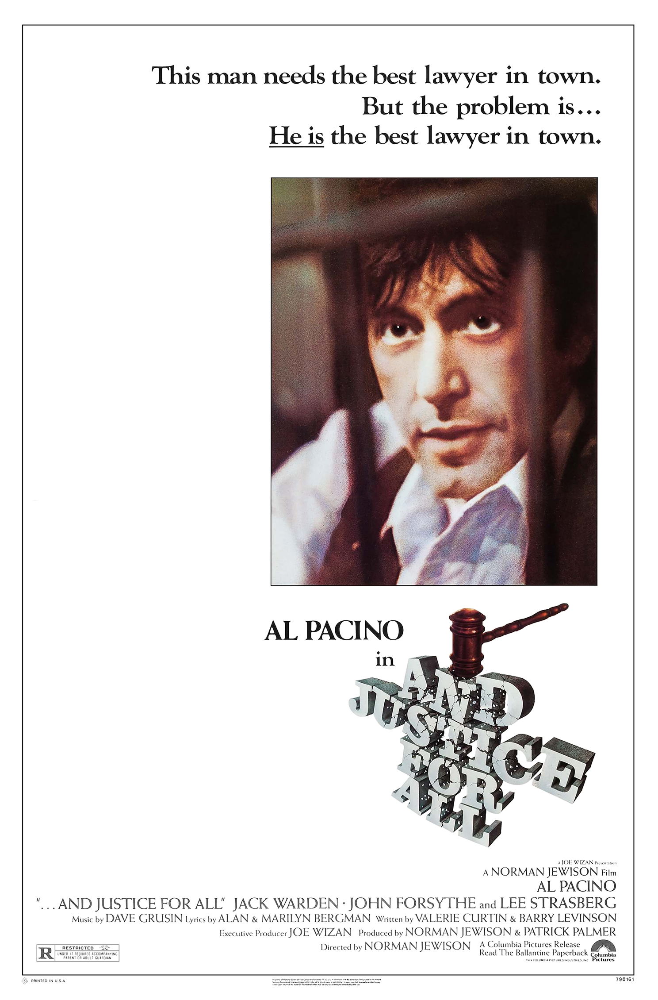

...And Justice for All
52nd Academy Awards
(Oscars 1980)
2 Nominations, 0 Awards
| Watched |
| Nominations | ||
|---|---|---|
| Category | Nominees | Result |
| Actor in a Leading Role | Al Pacino | Nominated |
| Writing (Screenplay Written Directly for the Screen) | Barry Levinson and Valerie Curtin | Nominated |